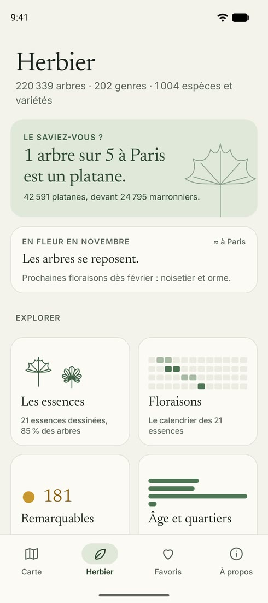
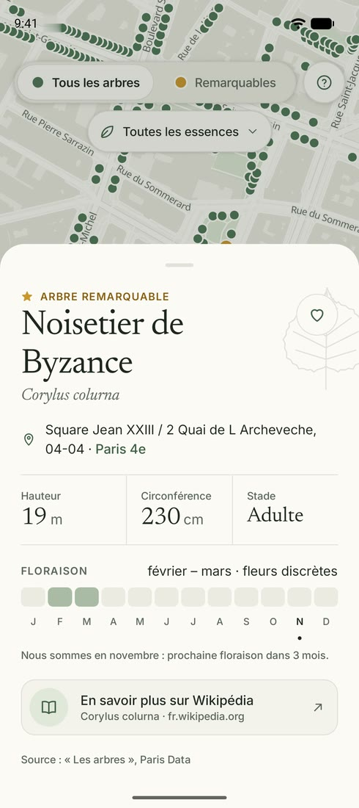

Les arbres de Paris, un par un.
Platanes, tilleuls, marronniers, ginkgos : les 220 339 arbres de la Ville de Paris sur une carte, avec leur nom, leur taille, leur floraison, et les arbres remarquables en or. Ouvrez la carte et découvrez l’arbre juste à côté de vous.


- arbres sur la carte
- 220 339
- genres, du platane au ginkgo
- 202
- arbres remarquables
- 181
- feuilles dessinées à la main
- 21
Un herbier dans la poche
Calme et sans compte à créer : l’application montre les arbres, leur histoire et leurs saisons, rien de plus.
-
Chaque arbre sur la carte
Touchez un point pour voir l’essence, la hauteur, la circonférence et l’adresse de l’arbre, avec un lien vers Wikipédia.
-
L’arbre le plus proche
Un bouton, et la carte vous montre l’arbre à côté de vous, puis le suivant : de quoi mettre un nom sur ceux de votre rue.
-
Par essence
Montrez seulement les marronniers, les chênes ou les ginkgos, et retrouvez dans l’Herbier les essences les plus plantées.
-
Les saisons
Le calendrier de floraison de chaque essence, et vos arbres favoris gardés sur votre téléphone.
Des données ouvertes
Les arbres viennent du jeu de données « Les arbres » publié par la Ville de Paris sous licence ODbL, et actualisé régulièrement.
Le fond de carte, dessiné aux couleurs de l’herbier avec MapLibre, vient d’OpenFreeMap : des tuiles OpenMapTiles faites des données d’OpenStreetMap et de ses contributeurs (licence ODbL).
Les mois de floraison viennent du « Guide des Essences de Paris » (Ville de Paris, Cerema) ; les fiches renvoient à Wikipédia.
Devenez testeur
Avant sa sortie sur Google Play, l’application passe par un test fermé de deux semaines. Il vous faut un téléphone Android et un compte Google.
-
Rejoignez le groupe
Inscrivez-vous au groupe « Testeurs Arbres de Paris » avec le compte Google de votre téléphone.
-
Recevez l’invitation
Dès que le test ouvre, le lien d’inscription arrive par e-mail, envoyé au groupe.
-
Installez et dites-nous
Acceptez l’invitation, installez l’application depuis Google Play et gardez-la quinze jours. Vos remarques sont les bienvenues.
Le groupe est hébergé par Google Groups. Les membres ne voient pas les adresses des autres, et vous pouvez le quitter à tout moment (confidentialité).
Une question, une idée ?
Un arbre mal placé, une essence oubliée, une envie de fonctionnalité : écrivez-nous.